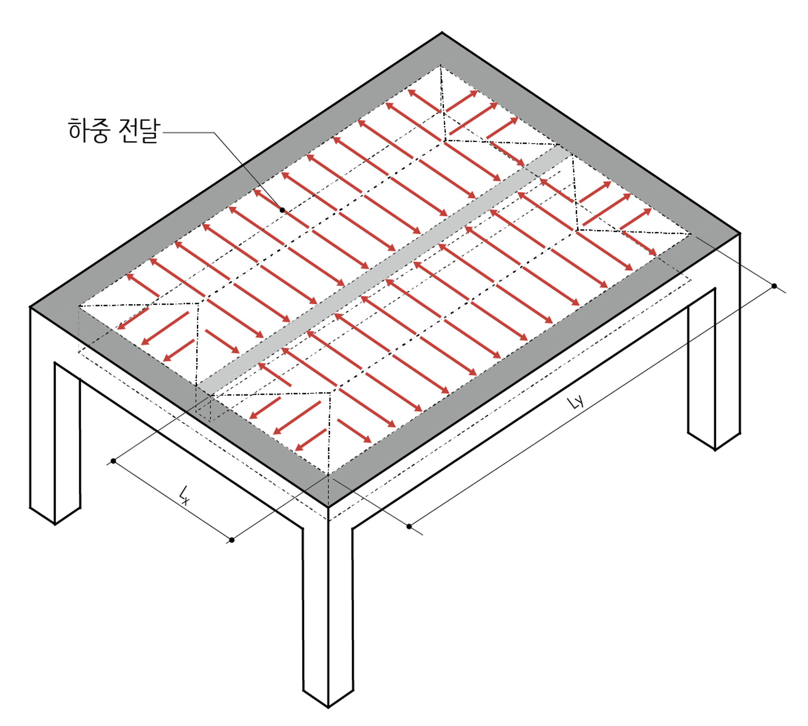
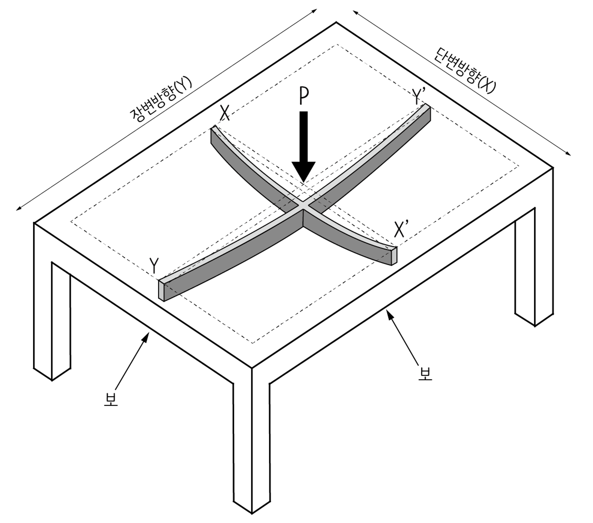
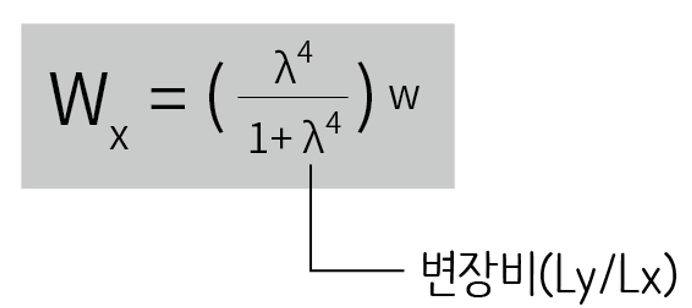
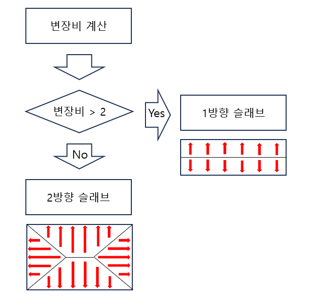
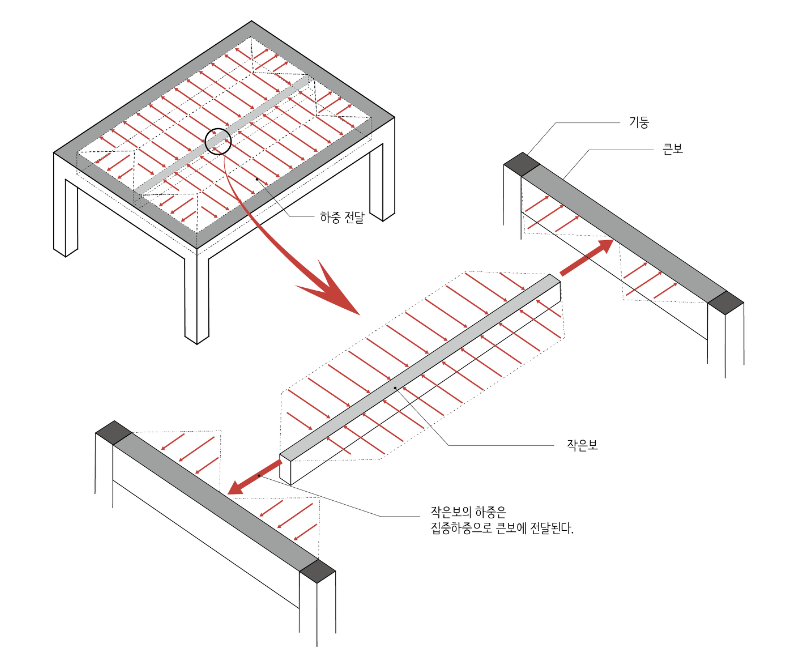
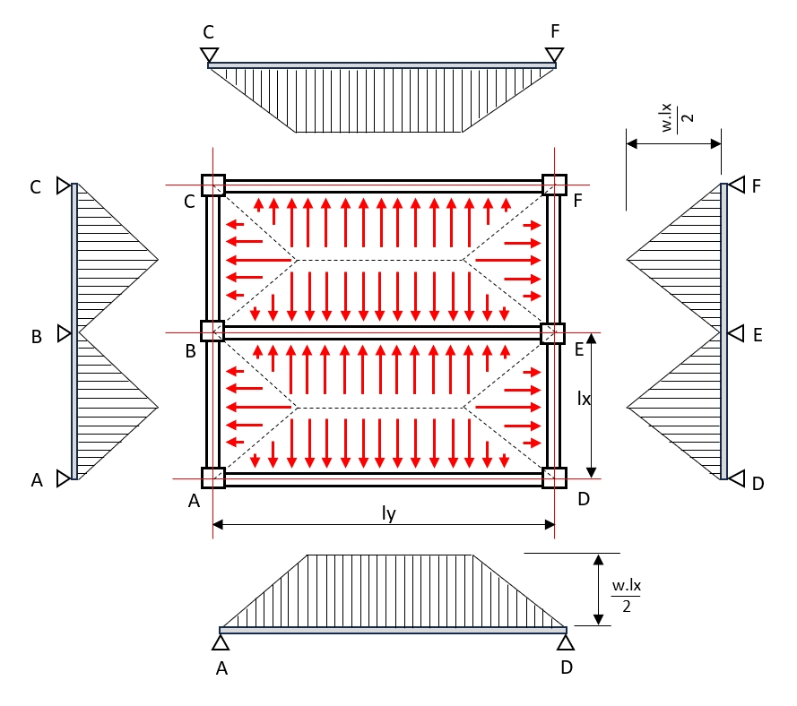

슬래브는 고정하중(자신의 무게를 포함한 마감재 그리고 밑에 달린 천장재 등의 무게)과 활하중(가구나 사람 등의 무게) 같은 수직하중을 보에 전달합니다.

2방향 슬래브 중간쯤에 하중 P가 작용한다고 가정해보겠습니다. 이 하중은 장변 방향과 단변 방향으로 각각 전달됩니다.

이때 하중이 전달되는 방향을 따라 미세한 두께로 슬래브를 잘라 서로 교차하는 미세한 두께의 작은보를 만들었다고 생각해봅시다. 슬래브에 작용하는 하중 P는 이 미세한 보들을 따라 하중이 전달된다고 이해할 수
있습니다.
슬래브의 양쪽 경간(Span)이 다르다면 서로 교차하는 두 보는 하나는 짧고 또 하나는 길게 됩니다. 그러나 하중 P 때문에 생기는 처짐량은 둘 다 같아야 합니다. 이 처짐량은 양쪽 보측면에 다르게 영향을 미칩니다.
단변 방향으로 뻗어있는 짧은 보 측면에서는 보 길이에 비해 상대적으로 많이 변형되었고, 길이가 긴 보는 길이에 비해 상대적으로 조금 변형된 것으로 이해할 수 있습니다. 즉 단변 방향에서 보면 길이에 비해
많이 구부러졌기 때문에 휨모멘트가 크게 발생한 것입니다. 따라서 하중 P가 단변 방향으로 더 많은 전달된다고 볼 수 있습니다.
다른 측면에서 얘기하면 장변 방향보다는 단변 방향의 거리가 짧기 때문에 하중 P가 단변 쪽으로 더 빨리 도달하고 더 많은 하중이 전달됩니다. 따라서 2방향 슬래브에서는 단변 방향이 더 중요하고 주근 방향이
됩니다. 철근을 배근하게 되면 단변 방향 철근과 장변 방향 철근이 교차하게 되는데 단변 방향 하부 철근을 맨 먼저 배치해야 구조적인 성능이 좋아집니다.
슬래브 4변 주위로 보가 달려 있어 지지하고 있다면 단변방향의 하중 분담비율은 다음과 같이 구할 수 있습니다.

여기서 **변장비(λ=Ly/Lx)는 단변의 순경간 길이(Lx)에 대한 장변 순경간길이(Ly)의 비**에 해당합니다.
1방향 슬래브와 2방향 슬래브를 나누는 기준이 1 : 2이기 때문에 이 기준을 대입해보면 변장비(λ) = 2가 됩니다.
변장비가 2일 때 값을 계산해 보면 Wx = 0.94W 정도가 됩니다. 다시 말해서 슬래브 단변방향(x방향)의 하중 분담비율은 94% 이상입니다. 결국 1방향 슬래브는 λ > 2 이기 때문에 하중 분담비율은
94%보다 더 커지기 되고 슬래브에 가해지는 하중의 대부분을 분담한다고 볼 수 있습니다.


슬래브에서 작은보, 작은보에서 큰보로 전달되는 하중의 흐름은 상기 그림과 같으며, 이때의 고정하중(Dead Load)과 활하중(Live Load)의 면적비 만큼 하중이 전달된다고 가정하고 하중의 흐름을 계산합니다.

보에 걸리는 하중의 계산은 위의 그림과 같이 각 보에 걸리는 하중을 삼각형 및 사다리꼴 형태의 등분포 하중(삼각형 및 사다리꼴)으로 변환한 뒤에 보에 걸리는 하중을 계산한다.